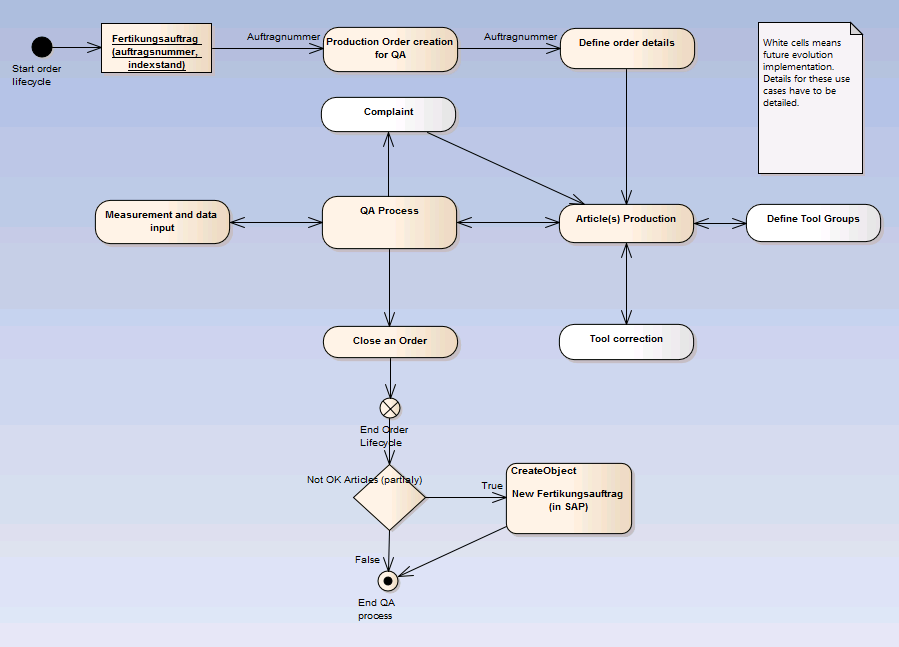
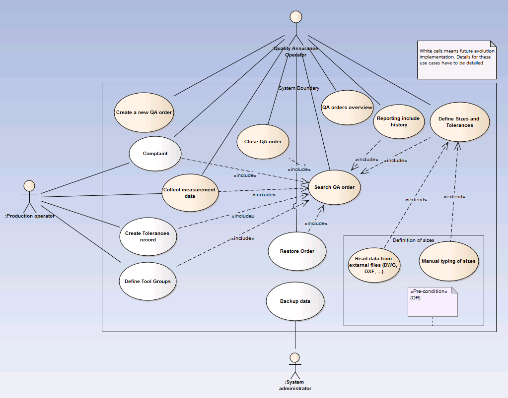

Procesy vo výrobnej firme
Proces produkcie
Navrhovaný systém by mal podporovať tento proces. Priebeh procesu z hľadiska funkcionality systému v súlade s požiadavkami oddelenia kvality je nasledovný:
- Celý proces začína prijatím objednávky a založením výrobnej objednávky (fertigungsauftrag) v systéme SAP. Objednávka má atribúty: číslo objednávky, index výkresu, ktoré sú jednoznačné pre jednu objednávku.
- Vytvorenie objednávky v systéme QAM na základne vstupných údajov a v ďalších verziách z údajov zo SAP-u.*
- Definovanie parametrov a tolerancií. V ďalších verziách načítanie údajov z DWG/DXF súborov.*
- Samotná produkcia artiklov.
- Meranie a import dát do systému QAM, reporting.*
- Uzatvorenie objednávky v systéme QAM
- V prípade uspokojivých výslednok meraní nasleduje doručenie zákazky, v opačnom prípade sa proces znova opakuje pod novou výrobnou objednávkou.
*Poznámka: Zahrnuté v budúcich verziách systému.
Priebeh znázorňuje nasledujúci diagram:
Požiadavky na softvér
Grafické znázornenie požiadaviek predstavuje nasledujúci diagram prípadov použitia:
Použité technológie
J2EE
Celosvetovým trendom vývoja informačných systémov je orientácia na prostredie J2EE (Java 2 Enterprise Edition), ktoré spája výhody internetových technológií a technológií používaných v rozsiahlych podnikových systémoch. Hlavnými prínosmi sú:
- nezávislosť na operačnom systéme klienta i serveru,
- databázová nezávislosť,
- automatická podpora bezpečnostných služieb,
- možnosť dynamického vyvažovania zátaťe serverov,
- jednoduchá výmena častí aplikácie bez prerušenia prevádzky a pod.
JSF
JavaServer Faces je framework pre vytváranie dynamického webového používateľského rozhrania. Technológia sa začala vyvíjať od polovice roku 2001 a prvá verzia 1.0 bola vydaná spolu s J2EE v marci 2004. JSF je nasledovníkom starších technológií: Java servlets a JSP. Nová technológia umožňuje:
- jednoduché umiestňovanie komponentov na stránku pomocou tagov,
- prepojiť eventy generované komponentmi na server-side kód,
- "zviazať" komponenty so server-side dátami (tzv. binding),
- uložiť a obnoviť UI stav prostredníctvom "životnosti" serverových žiadostí (tzv. request scopes).
Životný cyklus JSF stránky (Facelet)

PrimeFaces
PrimeFaces je voľne dostupná knižnica JSF komponentov s rôznymi rozšíreniami. Zahŕňa:
- rozsiahlu sadu komponentov (HtmlEditor, Tabuľky, Grafy, Dialógy, TabView, a ďalšie ),
- vstavaný Ajax na základe štandardu JSF 2.0 Ajax APIs,
- mobile ui kit pre tvorbu mobilných webových aplikácií,
- 30 vstavaných tém a možnosť tvorby vlastných tém,
- pozostáva z jedného súboru jar a nevyžiaduje žiadnu špeciálnu konfiguráciu